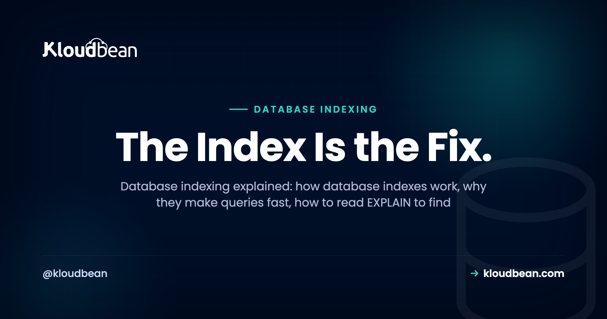

Database Indexing Explained: How Indexes Make Slow Queries Fast

Your query got slow. Not broken, just slow, and it drags a bit more every week as the table grows. Nine times out of ten the fix is database indexing, and most developers never check the one thing that would tell them what to do: the query plan. This is the database index explained without hand-waving. What an index is, how database indexes work, how to read EXPLAIN to find the missing one, and the mistakes that waste the indexes you already have.
An index is a sorted lookup structure, usually a B-tree, that lets the database jump straight to the rows you asked for instead of reading the whole table. Put one on the columns you filter and join on, and a query that scanned a million rows can touch a handful. The catch: every index slightly slows writes and uses disk, so you index for the queries you actually run, then use EXPLAIN ANALYZE to prove it worked.
What a database index really is
Picture a 900-page book with no index. To find every mention of one term you read all 900 pages, checking each. That's a full table scan: the database reads every row and keeps the matches. Fine for 500 rows, brutal for five million.
An index is the section at the back. Values in sorted order, each pointing to the exact pages. Look it up, jump straight there. A database index does the same for a column, a sorted copy that points back to the full row. It costs a little disk and a little write time, and it turns "read everything" into "go straight to it."
How database indexes work: the B-tree in plain terms
The default index in PostgreSQL and MySQL (InnoDB) is a B-tree, and you don't need the academic version to use it well. Think of a sorted tree you search by narrowing. The top node splits the values into buckets, each bucket splits again, and a few hops down you hit a leaf that points to the rows.
The payoff is the cost curve. A scan is linear: double the rows, double the work. A B-tree lookup is logarithmic: double the rows, add about one hop. On a million-row table that's reading a million versus reading maybe twenty. That's why an index is the highest-leverage database performance fix most apps leave unused.
Here's the before and after on five million orders filtered by customer_id, no index yet. Your exact numbers will differ, but watch the shape:
EXPLAIN ANALYZE
SELECT * FROM orders WHERE customer_id = 42;
QUERY PLAN
------------------------------------------------------------------
Seq Scan on orders (cost=0.00..96341.00 rows=18 width=91)
(actual time=0.29..612.4 rows=17 loops=1)
Filter: (customer_id = 42)
Rows Removed by Filter: 4999983
Planning Time: 0.11 ms
Execution Time: 612.5 msLook at Rows Removed by Filter: 4999983. Postgres read all five million rows to return 17. Add the index and rerun:
CREATE INDEX idx_orders_customer_id ON orders (customer_id);
EXPLAIN ANALYZE
SELECT * FROM orders WHERE customer_id = 42;
QUERY PLAN
------------------------------------------------------------------
Index Scan using idx_orders_customer_id on orders
(cost=0.43..40.19 rows=18 width=91)
(actual time=0.03..0.07 rows=17 loops=1)
Index Cond: (customer_id = 42)
Planning Time: 0.13 ms
Execution Time: 0.11 msSame query, same rows, completely different work. The plan flipped from Seq Scan to Index Scan and the time collapsed. The SQL didn't change. One index did.
Reading the query plan: the skill most developers skip
Adding indexes at random is guessing. The plan shows where the time goes. PostgreSQL gives you two commands: EXPLAIN shows the intended plan with cost estimates without running the query, and EXPLAIN ANALYZE runs it and reports real timings and row counts, which is what you want for a slow query.
Look for the smoking gun. On a big table, a Seq Scan with high cost and a large Rows Removed by Filter is your missing index in writing. An Index Scan or Index Only Scan means an index is working.
MySQL has EXPLAIN too. Read the type column first: ALL is a full table scan, the same red flag, while ref, range, and eq_ref mean it's using an index. The key column names the index it chose, and rows estimates how many it will examine.
EXPLAIN SELECT * FROM orders WHERE customer_id = 42;
+----+-------------+--------+------+---------------+------+---------+---------+-------------+
| id | select_type | table | type | possible_keys | key | ref | rows | Extra |
+----+-------------+--------+------+---------------+------+---------+---------+-------------+
| 1 | SIMPLE | orders | ALL | NULL | NULL | NULL | 4998210 | Using where |
+----+-------------+--------+------+---------------+------+---------+---------+-------------+That type: ALL with key: NULL and rows in the millions is the same story as a Seq Scan. Add the right index and type becomes ref, key shows your index, rows collapses. MySQL 8 also has EXPLAIN ANALYZE for real timings.
What you should actually index, and why
Indexes aren't free, so put them where reads look things up. Three spots cover most of it.
Columns in your WHERE clause. Filter WHERE status = 'active' or WHERE email = ... on a large table and that column wants an index. An unindexed filter shows up as a Seq Scan that throws away most of the rows.
Join keys, especially foreign keys. The classic miss. Join orders to customers and the join column needs an index or the join becomes a scan. The gotcha few people hear: PostgreSQL does not auto-create an index on a foreign key column. It indexes the referenced primary key but leaves the child column bare unless you add it. MySQL's InnoDB creates one for you. So on Postgres, index your foreign keys. Unindexed FKs also make parent deletes slow, because the database scans the child table to check the constraint.
Columns in ORDER BY. A B-tree is already sorted, so an index can return rows in order and skip a separate sort step. If you constantly ORDER BY created_at and paginate, an index there earns its keep.
Composite indexes and the leftmost-prefix rule
A composite index covers more than one column, and column order is what people get wrong. An index on (customer_id, created_at) is sorted by customer_id first, then created_at within it. So it serves a query on customer_id alone, or both together, but not created_at alone. That's the leftmost-prefix rule: the index helps only when your filter uses a leading run of its columns from the left.
-- one index, three shapes it can serve:
CREATE INDEX idx_orders_customer_created
ON orders (customer_id, created_at);
-- uses it: WHERE customer_id = 42
-- uses it: WHERE customer_id = 42 AND created_at >= '2024-01-01'
-- uses it: WHERE customer_id = 42 ORDER BY created_at
-- CANNOT: WHERE created_at >= '2024-01-01' (created_at is not leftmost)Order the columns by how you query them: the equality filter first, the range or sort column second. Backwards, and the index sits unused while you wonder why the query is still slow.
Covering indexes and index-only scans
Sometimes an index answers the whole query. If it holds every column the query needs, the database reads straight from the index and never visits the table. Postgres calls this an Index Only Scan; MySQL shows Using index in the Extra column. In Postgres you add non-key columns with INCLUDE:
CREATE INDEX idx_orders_customer_incl
ON orders (customer_id) INCLUDE (status, total);
-- this can now be an Index Only Scan, no table visit:
SELECT status, total FROM orders WHERE customer_id = 42;Covering indexes help hot read paths. Don't sprinkle them everywhere: a wide one is bigger and slower to write, which brings us to the part people skip.
The tradeoff: indexes make writes slower
Every index is a second structure the database keeps in sync. Insert a row and it updates the table plus every index on the affected columns, same for updates and deletes. So an index speeds reads and taxes writes, and it uses disk. On a write-heavy table, ten indexes you don't need is real cost on every insert.
That's why "just index everything" is a real anti-pattern. Over-indexing bloats the table, slows writes, and gives the planner more ways to guess wrong. Index for the queries you actually run in production, not the ones you imagine you might.
| Index it | Usually skip it |
|---|---|
| Columns in WHERE on big tables | Small tables (a scan is already fast) |
| Foreign keys and join columns | Columns you never filter or join on |
| Columns you ORDER BY or paginate on | Low-selectivity flags like a boolean |
| High-selectivity columns (many distinct values) | Write-hammered tables you rarely query that way |
Five mistakes that quietly waste your indexes
These send people to Google at 2am, sure they have an index yet still staring at a Seq Scan.
1. No index on the foreign key. So common on Postgres. The join looks innocent, the plan shows a scan on the child table, one index fixes it.
2. A function on the indexed column. An index on email won't help WHERE lower(email) = 'sam@example.com', because the index stores email, not lower(email). Index the expression instead:
-- defeats a plain index on email:
SELECT * FROM users WHERE lower(email) = 'sam@example.com';
-- index the expression instead:
CREATE INDEX idx_users_lower_email ON users (lower(email));3. A leading-wildcard LIKE. A B-tree can use LIKE 'sam%' because sorted order finds a prefix. It can't use LIKE '%sam'. A value that ends in something isn't found by a structure sorted from the start. Leading wildcards need a trigram or full-text index, not a plain B-tree.
4. A low-selectivity column. An index helps when it narrows a lot. A boolean like is_active, half the rows true, barely narrows anything, so the planner ignores it and scans, correctly. Index columns with many distinct values, not near-constant flags.
5. Stale statistics. The planner chooses scan versus index from stats about your data. After a big load or delete they go stale and it calls it wrong. ANALYZE (Postgres) refreshes them. If a plan looks wrong right after a migration, analyze the table before blaming the index.
A database indexing workflow that beats guessing
Don't add indexes by intuition. Follow the evidence.
Find the slow queries. In Postgres, pg_stat_statements aggregates every query so you can rank by mean or total time. In MySQL, turn on the slow query log. You want the queries that are slow times often, not just the one that scared you today.
-- Postgres: the heaviest queries by average time
SELECT query, calls, mean_exec_time
FROM pg_stat_statements
ORDER BY mean_exec_time DESC
LIMIT 10;Explain the worst offender. Run EXPLAIN ANALYZE and find the Seq Scan on the big table, noting the filter or join column.
Add the index that matches the query. Single column for a single filter, a composite in the right order for a multi-column filter or a filter-plus-sort.
Re-run EXPLAIN ANALYZE and confirm. The scan should become an index scan and the time should drop. If not, you indexed the wrong thing or hit one of the five mistakes. Measure, don't assume. On big Postgres tables, build with CREATE INDEX CONCURRENTLY so you don't lock writes while it builds.

Before you resize the database, check the plan
The opinion I'll defend: most "we need a bigger database server" moments are one missing index. The symptom is identical, CPU pegged and everything slow under load, so the instinct is a bigger instance. Sometimes that's right. Often it buys a few weeks at double the cost while the real problem, a table scanned end to end on every request, rides along untouched.
A resize treats the symptom. An index treats the cause. Run EXPLAIN ANALYZE on your top queries first. Scale the hardware when the plans are clean and you're genuinely out of headroom, which happens, just later than most teams think. If you do need to grow, vertical vs horizontal scaling covers that decision.
Where the managed database fits
Indexing is your job. It lives in your schema and your queries, and no host can guess which columns you filter on. The platform's job is to run the engine well and stay out of the way. On Kloudbean you launch a managed PostgreSQL, MySQL, or MariaDB in a few clicks, on a private network, with automatic backups, then write your own CREATE INDEX and read your own EXPLAIN, because they're standard Postgres and MySQL.
A server health view shows you when a database pins the CPU, so you go read the plan instead of guessing. And because it runs on a real server with room to resize, you get the honest choice: fix the index first, grow the box only when the plans are clean. Pooling is the companion lever on connections, and caching hot reads in managed Redis keeps repeat queries off the database. New to this? Start with adding a managed database to your app. Still choosing an engine? MySQL vs PostgreSQL lays out the tradeoffs.

A managed database where you own the schema, we run the engine.
Launch a managed PostgreSQL, MySQL, or MariaDB in minutes, add your indexes, and read EXPLAIN like normal. Automatic backups, private networking, a server health view, and free migration help, all on one dashboard. Start free at kloudbean.com or see pricing.
Managed PostgreSQL, MySQL & MariaDB · Automatic backups · Private networking · Resize on demand · Free migration · Free trial
FAQ
What is a database index?
A sorted lookup structure, usually a B-tree, that stores a column's values in order with pointers to the matching rows. It lets the database jump straight to those rows instead of scanning the whole table. The cost is a little disk and slightly slower writes, since the index has to stay in sync.
How do database indexes work?
Most indexes are B-trees, a sorted tree the database searches by narrowing the range at each level. A few hops reach a leaf that points to the exact rows, so lookups stay fast as the table grows. That's how an index turns a linear full table scan into a near-instant jump.
When should I add an index?
When a column shows up in a WHERE filter, a JOIN, or an ORDER BY on a table big enough that scanning is slow. The clearest signal is a plan showing a sequential scan with high cost and most rows thrown away by the filter. Confirm the win by rerunning EXPLAIN ANALYZE afterward.
What is EXPLAIN and EXPLAIN ANALYZE?
EXPLAIN shows the plan the database intends to use without running the query. EXPLAIN ANALYZE actually runs it and reports real timings and row counts, which is what you want for a slow query. In both Postgres and MySQL you're checking whether it uses an index scan or a full table scan.
Why is my query slow even with an index?
Usually the index can't be used as written. Common causes: a function around the column like lower(email), a leading-wildcard LIKE, the wrong column order in a composite index, or stale planner stats that need ANALYZE. Run EXPLAIN ANALYZE to see whether the index is actually used, then fix that cause.
Can I have too many indexes?
Yes. Every index is updated on each insert, update, and delete, so extras slow writes and eat disk. Over-indexing is a real anti-pattern, especially on write-heavy tables. Keep the indexes your real queries use and drop what nothing touches.
Should I index foreign keys?
On PostgreSQL yes, and you have to do it yourself, because Postgres doesn't auto-index the referencing column of a foreign key. Without it, joins on that key scan the child table and parent deletes get slow. MySQL InnoDB creates the index automatically, so this mostly bites Postgres users.
What is a composite index and does column order matter?
A composite index covers several columns and is sorted by the first, then the second within it, and so on. Order matters because of the leftmost-prefix rule: an index on customer_id then created_at helps filters on customer_id, but not on created_at alone. Put the equality column first, the range or sort column second.
What is a covering index?
One that contains every column a query needs, so the database answers from the index without touching the table. Postgres calls it an index-only scan and lets you add columns with INCLUDE; MySQL shows Using index in EXPLAIN. It speeds hot read paths but is wider and slower to write, so use it deliberately.
Do indexes work the same in PostgreSQL and MySQL?
The core is the same: B-tree indexes, EXPLAIN to read the plan, and the same rules for WHERE, joins, and sorting. The differences are details, like Postgres not auto-indexing foreign keys while MySQL does, and Postgres INCLUDE versus MySQL covering behavior. Choosing between them goes well beyond indexing.